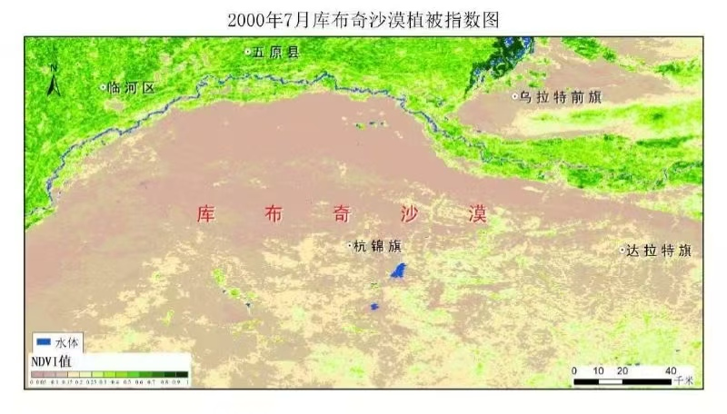

全国荒漠化土地面积（万km²）
≈ 2.6个法国 · 占国土 27.2%
中国西北荒漠化治理全景纪实
73年，从170万平方公里到93万平方公里——
一场人类历史上最大规模的生态修复战役正在改写中国西北的命运
荒漠化面积（万km² · ≈8个大兴安岭）
三北造林（万公顷 · ≈35个北京）
治理成功率（%）
治沙历程（年）
中国西北地区荒漠化现状与治理成效
全国荒漠化土地面积（万km²）
西北主要沙漠（个）
受威胁人口（百万）
年均降水量（mm）
年均经济损失（亿元）
累计治理面积（万公顷）
西北地区面临的严峻挑战与威胁
耕地因荒漠化持续丧失生产力
强沙尘暴横跨数千公里
荒漠化迫使农牧民背井离乡
卫星遥感影像记录的真实治沙成果


不同土壤类型对植被生长和治沙策略的影响
塔克拉玛干、库布其等沙漠核心区域。有机质含量极低，保水能力差，植被难以自然生长，必须人工干预。
腾格里沙漠边缘、巴丹吉林周边。颗粒粗大、疏松透气，但保水保肥差。适合种植梭梭、花棒等耐旱固沙植物。
内蒙古高原、宁夏南部。较肥沃，有一定腐殖质层。适合种植杨树、樟子松等乔木，是草原恢复的主要区域。
青海东部、甘肃南部。腐殖质层深厚（30-80cm），肥力最高。适合农林业发展，是西北难得的优质土壤资源。
移动鼠标查看水分渗透过程
鼠标框选任意区域，查看纵向地质剖面与沙化成因
选择不同植物，了解根系如何固沙保水——根系越深，固沙能力越强
点击查看治沙区域的动植物详细图鉴
草方格沙障是中国独创的治沙技术，通过五步实现沙漠变绿洲
流动沙丘随风移动，表面温度可达70°C，植物无法生长。年均风速3-5m/s，风蚀模数3000-8000吨/km²。
点击下方技术单元，查看拆解动画与科普
西北干旱气候特点及其对植被生长的多重影响
荒漠化引发的连锁环境问题及其危害程度
强风将表层土壤吹蚀搬运，导致土地表层剥离、肥力下降。西北年均风蚀模数达3000-8000吨/km²，为全球最高水平之一。
降雨冲刷导致水土流失，河道淤积、水库寿命缩短。黄土高原水蚀面积超64万km²，是黄河泥沙的主要来源。
蒸发强烈导致地下盐分上升地表，形成盐碱斑。西北盐渍化耕地面积173万公顷，严重制约农业可持续发展。
荒漠化导致植被退化、野生动物栖息地缩减。西北特有物种数量近50年下降40%，多个物种濒临灭绝。
"锁边"是指在沙漠边缘地带建立绿色屏障，阻止沙漠向外扩张，形成"绿色围墙"。中国在西北地区构建了多条万里绿色锁边带，总长度超过3万公里，有效阻断了主要沙漠的扩张路径。
选择树种，点击3D沙地场景种植，观察树木成长，感受治沙成就感
选择工具放置治沙设施，点击灾害按钮模拟极端天气
这些数字见证了中国治沙的世界奇迹
1978年，三北防护林工程启动时，中国西北的荒漠化土地正以每年2460平方公里的速度扩张。沙尘暴肆虐，黄河年输沙量高达16亿吨，相当于每年"吃掉"一个中型水库的库容。毛乌素沙地的居民被迫三次搬迁，库布其沙漠周边的农牧民年均收入不足500元。
而今天，毛乌素沙地森林覆盖率从不足3%跃升至33%，即将从卫星地图上"消失"；库布其沙漠治理面积达6000平方公里，周边农牧民人均年收入从500元增长到1.5万元；三北防护林工程累计造林3500万公顷——相当于种出了35个北京的面积。
更令人振奋的是，中国治沙的"溢出效应"正在惠及全球。库布其模式已推广至中亚、非洲萨赫勒地区等100多个国家，帮助全球2000万公顷荒漠化土地实现逆转。2023年，联合国防治荒漠化公约秘书处宣布：中国是全球唯一实现荒漠化面积净减少的主要国家。
全球首个即将"消失"的沙漠，累计治理面积超3万km²
北方沙尘暴天数从年均30天下降到8天
联合国认证"全球治沙样本"，创造GDP超100亿元
建成1万公里防护林带，保护200万公顷耕地
AI种树准确率达85%，效率是人工的50倍
中国对全球绿化贡献面积占新增绿地的25%
当沙棘、枸杞、梭梭寄生的肉苁蓉从荒漠走向市场，治沙不再只是生态工程——它正在成为一条完整的绿色产业链
在宁夏中卫，一家沙棘果汁加工厂每年消化鲜果8000吨，生产沙棘原浆、沙棘气泡水、沙棘含片等产品。2024年，"沙漠果园"品牌的沙棘汁在电商平台单月销售额突破2000万元。在新疆和田，红枣、核桃、枸杞组成的"沙漠三宝"产业链年产值超过60亿元，带动了当地12万农户脱贫。
更值得关注的是光伏治沙模式——沙漠里铺设太阳能板，板下种植牧草和沙棘，板上发电、板下种植、板间养殖，实现了"一地三用"。内蒙古库布其的光伏治沙基地，年发电量达10亿千瓦时，同时在光伏板下种植沙棘和牧草，创造了1.2万个就业岗位。
他们用双手在荒漠中种下希望，用一生丈量绿色的边界
回顾中国荒漠化治理的重要里程碑
西北防护林建设起步
新中国成立初期即开始在甘肃、内蒙古等地建设防护林带，揭开了系统治沙的序幕。这一时期主要采用飞机播种和人工造林结合的方式，在条件相对较好的地区建立防护林带。

新中国成立初期即开始在甘肃、内蒙古等地建设防护林带，揭开了系统治沙的序幕。这一时期主要采用飞机播种和人工造林结合的方式，在条件相对较好的地区建立防护林带。
🌱 早期探索三北防护林工程启动
人类历史上规模最大的生态修复工程，规划期限73年（1978-2050），横距约8000公里，被誉为"绿色长城"。工程分八期建设，涉及东北、华北、西北13个省市区。

人类历史上规模最大的生态修复工程，规划期限73年（1978-2050），横距约8000公里，被誉为"绿色长城"。
📊 规划造林3508万公顷《联合国防治荒漠化公约》生效
中国作为缔约方，承诺到2030年实现荒漠化土地零增长，开启国际合作治沙新阶段。
🌍 113个缔约国退耕还林还草工程启动
国家投入超5000亿元，累计退耕还林还草面积超4200万公顷，3200万农户直接受益。这是中国乃至全球规模最大的退耕还林还草工程，从根本上改变了西北地区的土地利用格局。

国家投入超5000亿元，累计退耕还林还草面积超4200万公顷，3200万农户直接受益。
💰 5000亿+投入库布其沙漠模式获国际认可
联合国确定库布其为"全球治沙样本"，中国治沙经验向全球推广输出。
🏆 全球样本毛乌素沙地即将消失
森林覆盖率从不足3%提升至33%，累计治理面积超3万km²，成为世界治沙史上的奇迹。联合国盛赞为"全球最成功的荒漠化治理案例"，为全球治沙事业提供了宝贵经验。

森林覆盖率从不足3%提升至33%，累计治理面积超3万km²，成为世界治沙史上的奇迹。
🌳 33%覆盖率智能治沙全面推广
无人机播种、智能滴灌、卫星遥感监测等技术广泛应用，AI种树准确率达85%以上。
🤖 AI 85%+拖动时间滑块，见证风沙逐年减弱的绿色奇迹
用数据呈现荒漠化治理的壮阔进程
图表显示从1980年到2025年，荒漠化面积从261万平方公里减少至93万平方公里，治理面积从18万平方公里增加至168万平方公里。
从塔克拉玛干的锁边林带到毛乌素的绿色奇迹
从三北防护林的万里长城到智能治沙的科技力量
中国西北正在创造人类生态文明史上的壮阔诗篇
73年前，第一代治沙人在腾格里沙漠的边缘挖下第一锹沙土时，没有人相信这片"死亡之海"能长出绿色。今天，当我们把卫星影像拉回1978年再对比2025年，整个中国西北的色调正从枯黄缓缓转向苍绿。
这不是自然的馈赠，而是三代人、73年、3500万公顷的接力。每一棵梭梭的根系下，都埋着一位治沙人的汗水；每一片绿洲的边缘，都站着一位不屈的灵魂。库布其的牧民巴图说："以前我们和沙子打仗，现在我们和沙子做生意。"
沙棘果汁走向世界餐桌，肉苁蓉从荒漠走向药房，光伏板在沙漠里点亮万家灯火——治沙，早已不只是种树，而是一种生存智慧、一条致富之路、一个关于人与自然和解的中国方案。
而这一切，才刚刚开始。
年治沙历程
公顷造林
治理成功率
元年生态价值